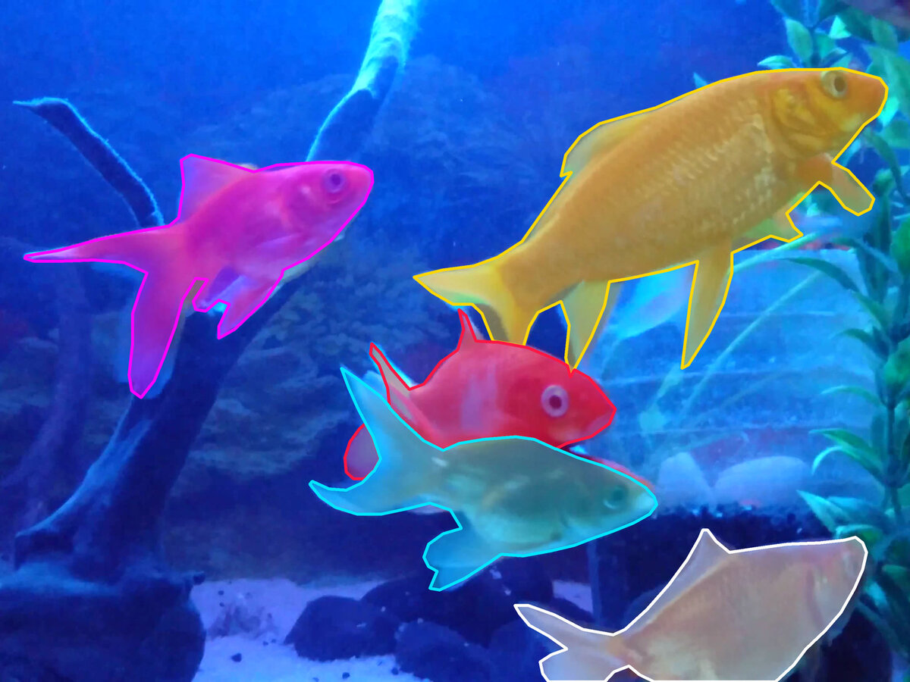
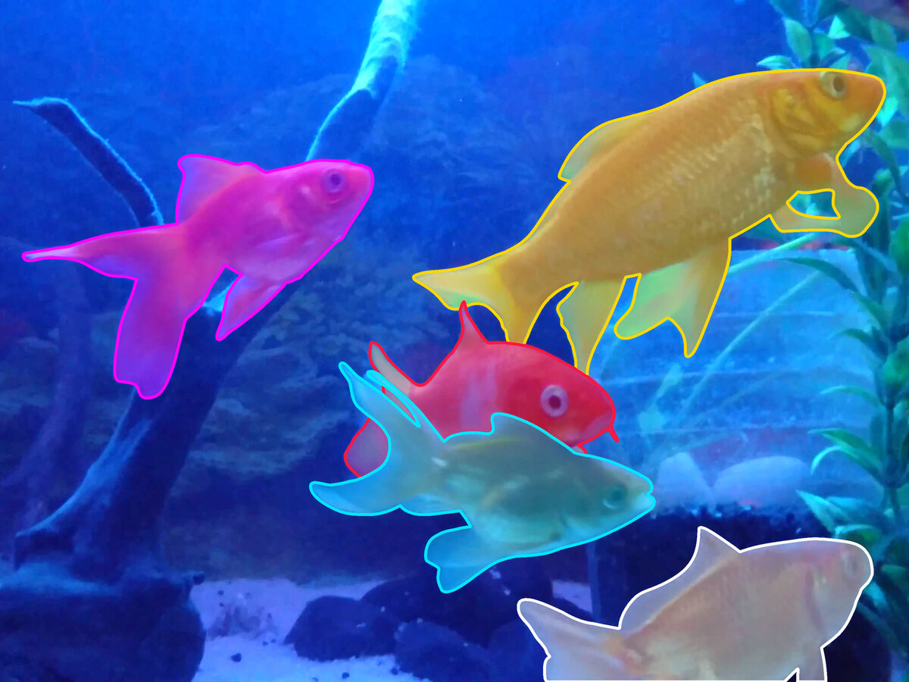
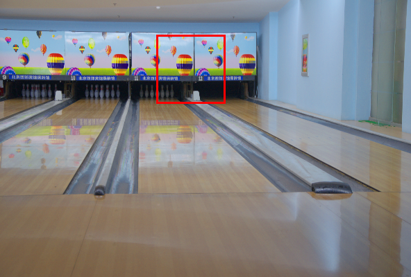
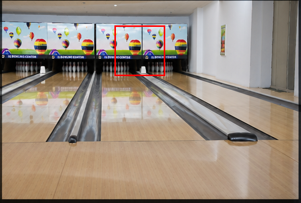

Successive generations of frontier models support a growing range of computer vision tasks, including tasks traditionally handled by specialist models. For computer vision researchers, this raises a broader question: how much of computer vision is now accessible through a general-purpose interface, and where do dedicated models remain necessary? Existing evaluations provide substantial evidence, but their findings are spread across benchmarks, papers, and model comparisons. Bringing these results together can help clarify which capabilities are established across models, where new capabilities are emerging, and which challenges remain.
The study. We organized our study around 34 capabilities across nine broad areas of computer vision, drawing on 55 benchmarks. We compare six frontier models with one another to identify shared strengths and differences; with specialist models, built specifically for individual tasks, to assess their performance on traditionally specialized tasks; and with reported human performance to place these results in context.
- 6
- frontier models
- 34
- capabilities
- 55
- benchmarks
- 9
- areas of vision
Frontier visual capability. Our evaluations show that the visual capabilities frontier models extend beyond image recognition and description to object detection, image and video segmentation, and 3D perception, including depth estimation and reconstruction. Their capabilities also extend to tasks requiring domain expertise, such as medical-image understanding and grounding, and remote sensing, as well as embodied understanding and navigation, image generation, and editing. These results indicate that a broad range of tasks traditionally handled by dedicated vision models is becoming accessible through general-purpose models, although performance varies across tasks.


Established strengths. Some capabilities are already becoming established strengths across frontier models. Recognition, visual reading, and knowledge-based reasoning stand out for their consistency across the six models we evaluated. These models combine visual understanding with world knowledge to read documents and charts, interpret scientific content, and solve visual mathematics problems. On the evaluated benchmarks, OCR approaches human performance, while all six models surpass the reported human reference in document, chart, and infographic understanding, as well as visual mathematical reasoning.
Emerging capabilities. Other capabilities show larger differences across models. Astra performs particularly strongly on several of these tasks. On the evaluated benchmarks, it surpasses the specialist references in object detection and image segmentation. It also exceeds the next-best frontier model in visual logical reasoning (+13.6 points), pose estimation (+22.7), video segmentation (+26.6), and 3D medical grounding (+27.9). In 2D spatial reasoning, it reaches the reported human performance. These strengths are not yet shared consistently across frontier models, but they expand our picture of what is becoming possible.
Semantic competence versus perceptual precision. Across these results, a recurring distinction emerges between semantic competence and perceptual precision. Frontier models show stronger progress in interpreting visual content and reasoning about it. Larger gaps remain when tasks require accurate geometric measurements, faithful preservation of fine details, or precise predictions maintained across video frames.
A recurring distinction between semantic competence and perceptual precision.
This distinction is also visible across related tasks. In 3D perception, models can locate an object from a description, yet still struggle to estimate depth accurately or reconstruct the surrounding scene. In image generation and editing, they can produce visually appealing results, but tasks like restoration are more demanding because they require faithful recovery of the original details. In video segmentation, although Astra leads the next-best frontier model by 26.6 points, it still faces significant challenges with precise boundaries, small structures, and consistency across frames. In medical imaging, similarly strong understanding and reasoning can coexist with gaps in specialized visual expertise. Models can draw on medical knowledge to interpret an image and even locate fine structures such as individual nuclei, yet struggle to distinguish nucleus types, which requires recognizing subtle visual differences, particularly in rare or less familiar categories.





This blog only scratches the surface. In the paper, we dig into four questions: how broad frontier visual capability really is, where the models agree and where they differ, where specialist-level performance is emerging, and whether a bit more reasoning or a few tools can close the remaining gaps (and what that costs). We hope you enjoy the read!